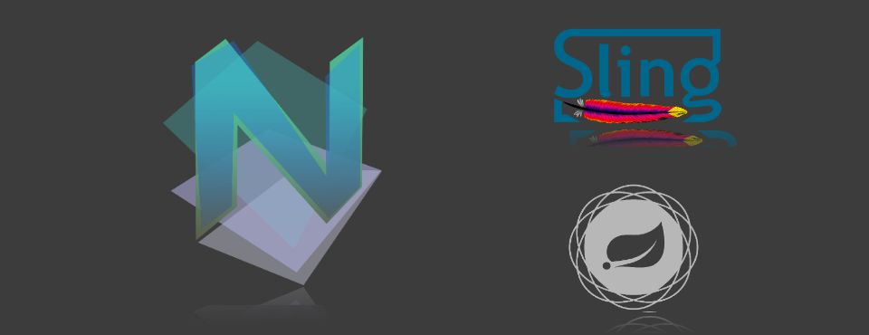
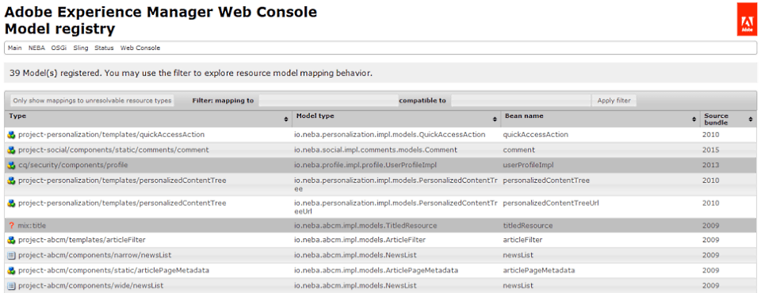
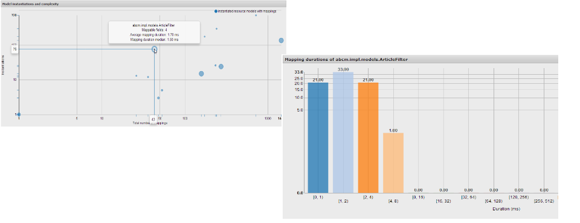

The best of Sling, powered by Spring.
-

Spring and Sling, integrated by Blueprint. Zero dependencies, all the @Semantics.
-

Declare resource models with one annotation, navigate resource model mappings directly in Sling
-

Explore resource model behavior in real time, visualized with d3js
-
TL;DR
NEBA integrates Sling and Spring in a non-intrusive, standardized manner.
-
-
License
NEBA is published under the Apache License. It includes works licensed under the ASL, EPL and BSD-3 license.
-
Compatibility
NEBA runs on AEM™ 5.3 to 5.6 - and AEM™6 using JAVA 6 or 7